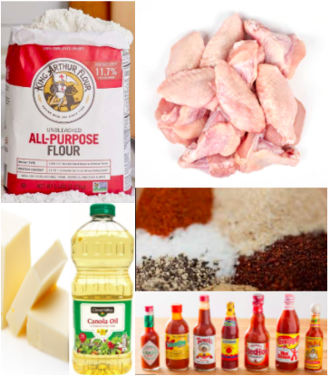
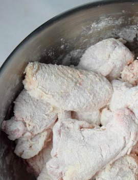
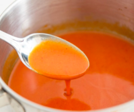
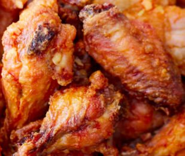
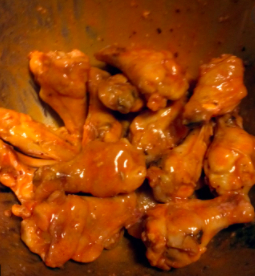

This spicy buffalo chicken wing recipe is sure to satisfy your cravings. These wings are perfect for game day and family barbecues.
Every bit packs a punch of heat and flavor that will leave you wanting more. Hungry yet? Use the recipe below to make these wings at home.
Ingredients

For the Chicken:
2 lbs. fresh chicken wings
1 cup all purpose flour
2 cups canola oil
To taste: salt
To taste: pepper
To taste: cayenne pepper
To taste: garlic powder
For the Sauce:
12 oz hot sauce of choice
1 and a half sticks of butter
See Ingredients
Mix
First mix the seasoning in the flour, then mix the chicken in with the seasoned flour to coat each wing.
In a seperate bowl melt the butter and mix with the hot sauce to create your buffalo sauce.


Cook
Fry the wings in canola oil until they float to the top of the oil and are golden-brown.

Toss
Toss the cooked wings in the buffalo sauce until the wings are heavily coated.

Serve
Serve wings with optional side of dipping sauces such as ranch or blue cheese, and celery or carrot sticks.